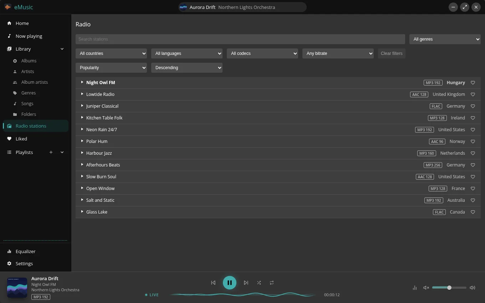
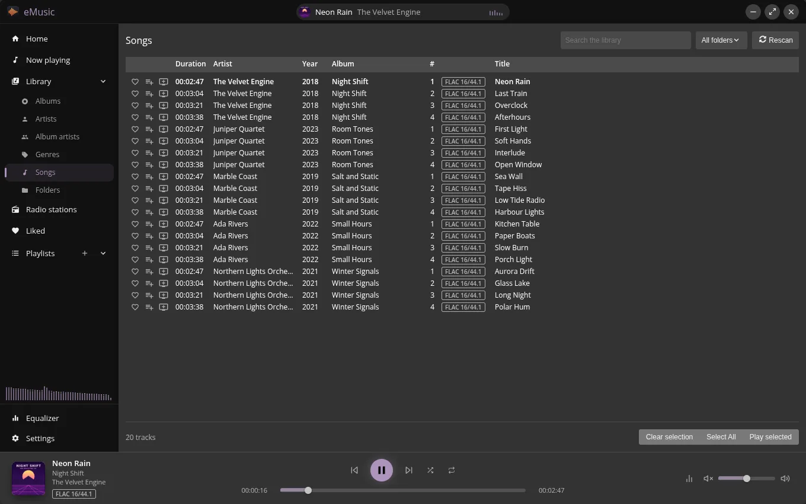
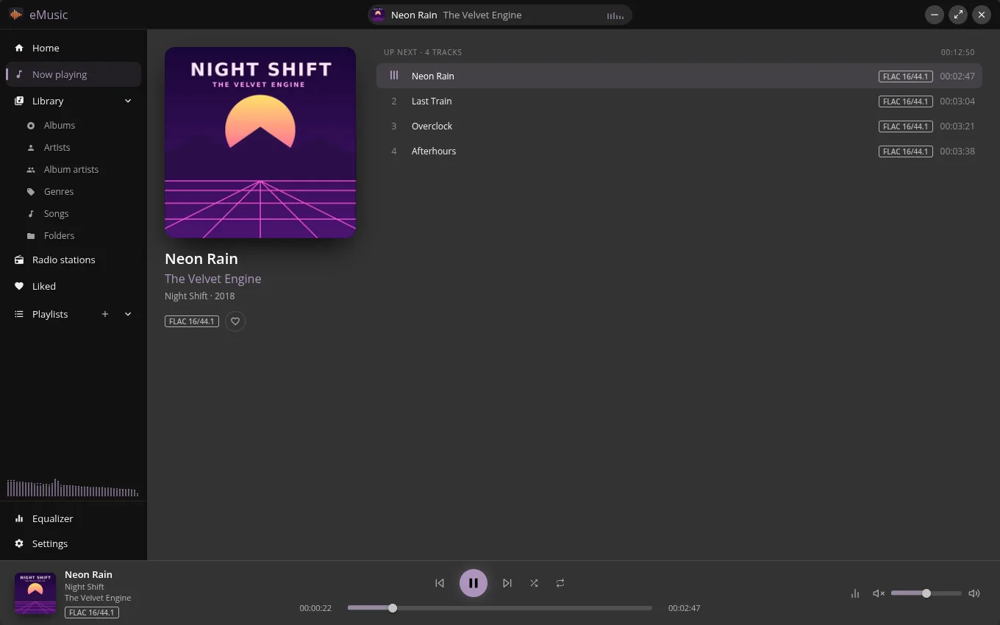

What you get
-
Your library, sorted out
Browse by album, artist, album artist and genre, or search by artist, album and title.
-
Lossless, and you can see it
Every track and station shows its audio format, so you know what you are listening to.
-
Internet radio built in
Tune in to stations from the open radio-browser.info directory, next to your own files. More about radio
-
Feels at home
Window controls follow your system, and a translucent window blurs the desktop behind it where the system allows.
-
Stays up to date
The app updates itself on start. New releases come out twice a week.
-
Free and open
No price and no account. The source is public under the ISC licence.
A look around
Internet radio, next to your own music
Search the station directory by name, genre, country, language, codec or bitrate, and sort by popularity. Each station shows its format, a live badge tells you it is a stream, and the player bar shows the song that is on right now.
Heart the stations you come back to and they wait in Liked, like your tracks.

Everything you own, in one list
Every file in your folders shows up with its artist, year, album, track number and format. Open a folder once and the library keeps itself in step with it.

What is playing, and what is next
The cover, the format and the whole queue sit on one page. Add songs or whole albums to the end of the queue, drag them into the order you want, and take out what you do not. The player bar below keeps the controls, the position and the volume in reach.

Download
Pick your system. Not sure about the processor? Most computers made in the last years are the first choice of the list.
Linux: how to start the AppImage
- Make the downloaded file executable:
chmod +x eMusic-<version>-<arch>.AppImage, or tick "Allow executing as a program" in the file manager. - Start it with
./eMusic-<version>-<arch>.AppImageor by double click. - It needs FUSE 3: the
fuse3package gives thefusermount3helper, and desktop installs have it. Without FUSE, start it withAPPIMAGE_EXTRACT_AND_RUN=1 ./eMusic-<version>-<arch>.AppImage. - Version 26.10.2 and older also need FUSE 2 (
sudo dnf install fuse-libson Fedora,sudo apt install libfuse2t64on Ubuntu 24.04).
What is new in {{version}}
-
{{notes}}